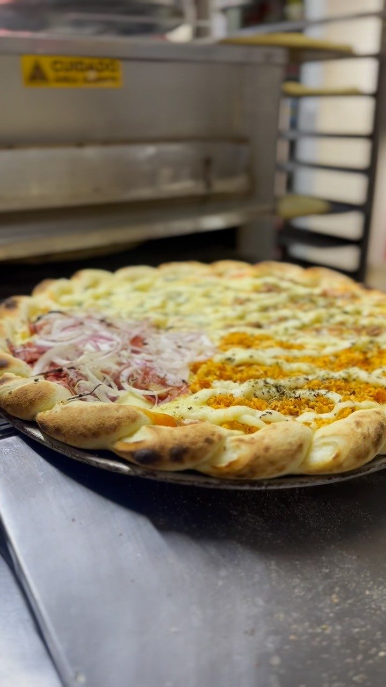

Início · A Su
A Su, pizzaria do Itinga
Pizzaria e pastelaria de bairro, no Instagram desde junho de 2024, com 14,3 mil seguidores e nota 4,9 no Google.
Desde 2024
Do Itinga para Lauro de Freitas
O primeiro post da Su no Instagram é de junho de 2024, marcado “Itinga - Lauro de Freitas”. Em 2026 a casa mudou para o ponto ao lado da Praça do Caranguejo, onde também funciona o restaurante do almoço.

Nas palavras da casa
Como a Su se apresenta
“conhecida pela pizza bem recheada, massa saborosa e atendimento no delivery. Trabalhamos com pizzas tradicionais e especiais, pastéis, combos e opções ideais para jantar em família, encontro com amigos ou pedido em casa.”Descrição da Su Pizzaria na ficha do Google
“🍕A melhor pizza da Região”Bio do Instagram @su.pizzaria
4,9 com 107 avaliações
“Foi a primeira vez que comi a pizza e fiquei fã! Bem recheada, ingredientes de primeira, massa saborosa e a entrega super rápida. Ganharam uma nova cliente!!!!! Parabéns! 👏🏾 Aqui em casa, eram só elogios!!!!”
“Primeira vez no restaurante e a experiência foi MARAVILHOSA 😍. Sabor, beeem recheada e preço acessível. Localização fácil. A equipe está de parabéns 👌🏽😃”
@su.pizzaria
Posts novos quase toda semana, com as pizzas saindo do forno e os combos do mês.
Abrir o InstagramDúvidas frequentes
Perguntas comuns
As avaliações são reais?
Sim: textos públicos do Google, lidos em 03/10/2026, com o nome abreviado.
A Su vende pastel?
A descrição da casa cita pastéis, mas eles não aparecem com preço no cardápio digital atual. Consulte pelo WhatsApp.
Bateu a fome?
Escolha o tamanho, os sabores e mande pelo WhatsApp.
A Su abre de quarta a segunda, a partir das 17h30 (terça fechada). Confirme pelo WhatsApp antes de pedir.